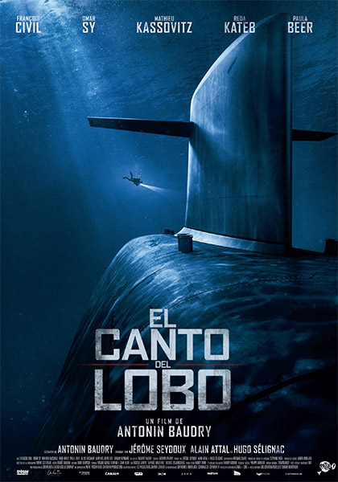

|  |
El canto del loboGénero: Accion Director:Abel Lanzac Descripcion: La oscura amenaza de una guerra nuclear aumenta descontroladamente. Lo único que se interpone en el camino de la destrucción son los oídos expertos de un tripulante de submarino. |
River Runs RedGenero: Suspenso Director:Wes Miller Año: 2019 Descripcion: Cuando el hijo de un exitoso juez es asesinado por dos policías que quedan libres,un veterano detective encuentra evidencia que implica a los oficiales y el juez decide hacer justicia por sus propias manos. |
|---|
Nuestra pequeña italiaGenero: Comedia | Romance Director: Donald Petrie Año: 2019. Descripcion: Nikki (Emma Roberts) es una talentosa y emergente chef que trabaja en Londres. Cuando regresa a casa a la pizzería familiar en Little Italy, revive el romance con su amigo de la infancia, Leo (Hayden Christensen), pero existe un problema; ¡es el hijo del enemigo mortal de su familia en el negocio de las pizzerías! Mientras sus familias están en guerra, mantienen su relación en secreto |
Viviendo con el enemigoGenero: Drama | Romance | Guerra Director:James Kent Año: 2019. Descripcion: Después de la Segunda Guerra Mundial, un coronel británico y su esposa reciben la tarea de vivir en Hamburgo para la reconstrucción posguerra, pero surgen tensiones con el alemán que era dueño de la casa. |
|---|